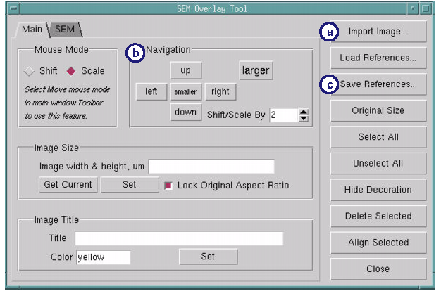
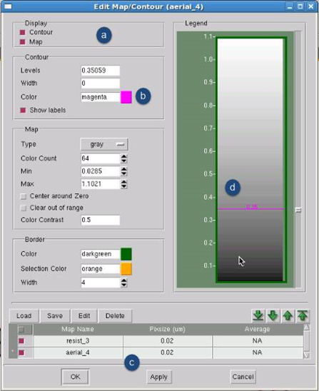

If the SEM contours
are not clear and contour design files are not available, use the
following method to create contours that roughly approximate the
SEM contours you have available.
This task uses the Dense PrintImage tool to
create contours. The accuracy of the contours is limited by the
optical, resist, and etch models you use to generate them.
Prerequisites
SEM
image files showing test structures you want to create contours
for
The
corresponding test pattern design file
The
process models (optical, resist, and optionally VEB) that were used
to create the contours contained in a litho model
Procedure
- Open the test pattern design
file in Calibre WORKbench.
- Pan and zoom the display to
the drawn version of the test structure corresponding to the SEM
image file.
- Open the Calibre SEMOverlay
Tool ().
- In the Calibre SEMOverlay
tool (Figure 1):
- Click the Import Image button. Navigate
to and load the SEM image file.
- Using the Navigation controls,
move and size the image until it overlays the test structure as
closely as possible.
- Save the location coordinates
in a reference file by clicking the Save
References button. If you lose the image placement,
you can click the Load References button to
reload the reference file.
Figure 1. Calibre SEMOverlay
Tool (Contour Calibration)
- Open the
RET Flow Tool v2.0 ().
Select LM mode from the left flyout panel and load your lithomodel.
- In the design window, left-click
and drag to draw a boundary box around the test structure. In the
RET Flow Tool click the Map button.
The Aerial Map tool draws an
aerial image contour and map over the test structure.
- Double-click anywhere inside
the aerial image to raise the Edit Map/Contour dialog box.
- In the Edit Map/Contour dialog
box (Figure 2):
- Unselect the Map checkbox.
- Change the Contour color to
a different color.
- Click Apply.
The aerial image map disappears,
leaving only the contour.
- Use the slider control to
expand or contract the contours until they match the SEM image contours.
Note the value of the threshold.
Figure 2. Edit Map/Contour Dialog
Box (Contour Calibration)
- Open the CM1 Center tool ().
- In CM1 Center:
- Switch to the CM1 tab.
- Click the Modelform button, and select
Modelform 0 (CTR), then click OK to select
that model.
- In the THRESHOLD field, enter
the value you found in step 8d.
- Save the CM1 model ().
- Add the new CM1 model to the
simulation.
- Raise the RET Flow Tool window.
- In the Process tab,
click Resist and browse to the new model.
- In the Conditions tab,
click Add. The new process window condition
uses the resist model instead of aerial threshold.
- Unselect
the box for the process window condition that uses aerial.
- Click the PI button.
Calibre WORKbench adds a new
layer to the design file, labeled with the process window condition
name.
- Add at least one clip layer.
Clips group contours with their
drawn mask features and can be used to select only parts of a contour
for calibration use. Clip layers are used to differentially weight
clips in model calibration. Follow these steps:
- Select .
- In the dialog box that appears,
click Add Layer.
- In the sub-dialog box that
appears, specify a layer number and a name.
- In the Calibre WORKbench main
window, select the new layer.
- In the layer color palette,
select the Clear button.
- In the main window toolbar,
click the Box button
and draw one or more clip boxes as needed.
- If you are modeling etch contours
(such as using the VEB Input layer method), you must create a second
contour for the etch process:
- In the
RET Flow Tool v2.0 PWC list, create a second PWC and click Etch to activate
the etch model.
- Click Options below
the PI button to display
the Output Layer(s) Options. Change the value of the Start Layer
field to a different number in order to write the new contour on
a separate layer. Click PI to
create the contour.
- Save the contour(s):
- Select .
- Change the filename to an
appropriate name, such as contour_cm1_thresh_340.oas.
- Click Save.
Results
The contour file will be created with
the specified name, and can now be used as input to a Contour Layer
Information file.